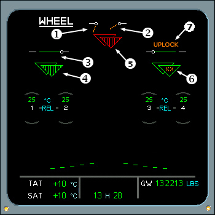

Landing Gear System Displays
ECAM Wheel Page Indications
1. AMBER LG DOOR SYMBOL - Indicates the landing gear door is fully open
2. AMBER LG DOOR SYMBOL - Indicates the landing gear door is in transit.
3. GREEN LG DOOR SYMBOL - Indicates the landing gear door is locked up.
The landing gear positions are indicated by two triangles for each gear. The left triangle is controlled by LGCIU 1; the right by LGCIU 2.
A missing landing gear triangle indicates that one LGCIU detects that a landing gear is uplocked.
4. GREEN TRIANGLE - One LGCIU detects a landing gear is downlocked.
5. RED TRIANGLE - Indicates one LGCIU detects a landing gear is in transit.
6. AMBER XXXs IN TRIANGLE - Indicates that one LGCIU has failed.
|  |
7. UPLOCK ANNUNCIATIONn - Annunciation appears if the landing gear uplock is engaged when the landing gear is downlocked.